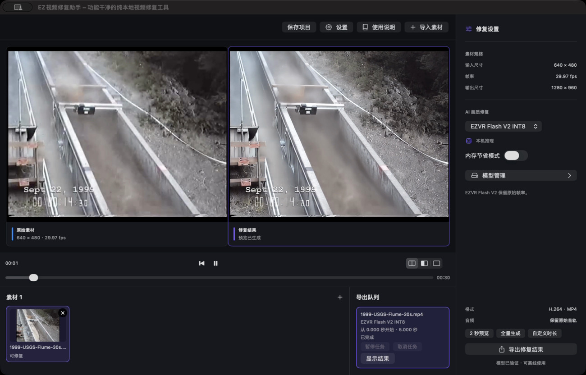
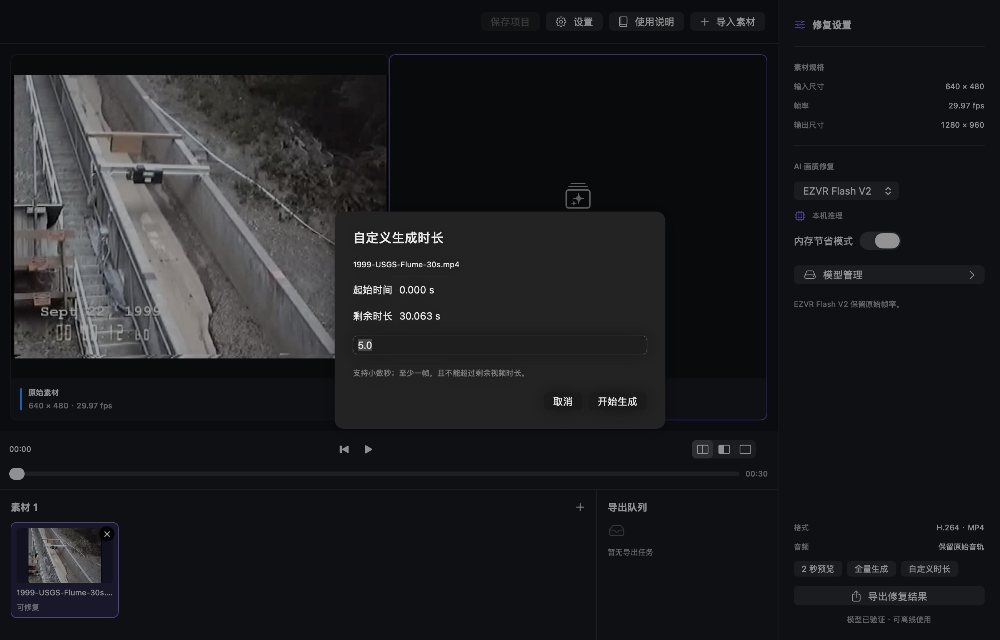
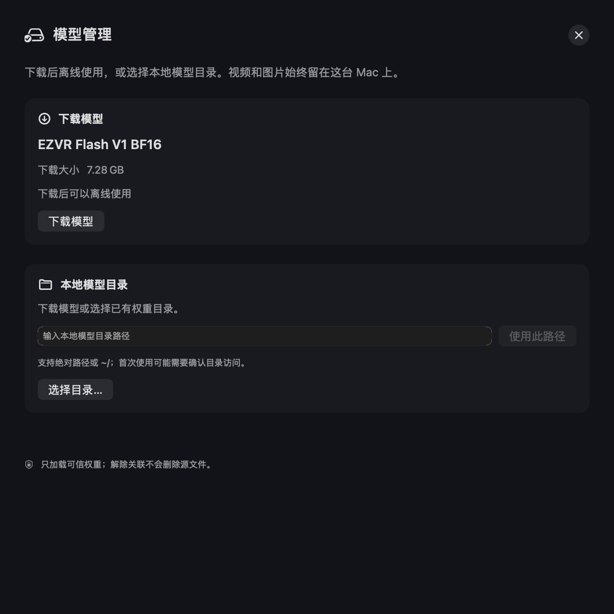
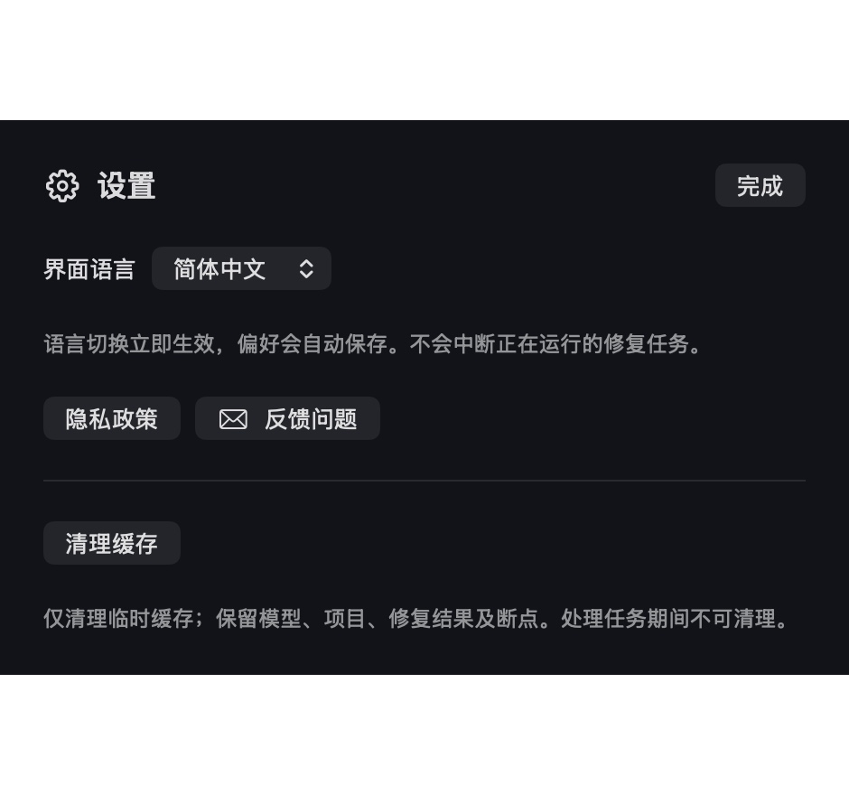

在中文界面修复 5 秒水槽实验影像
看看如何导入视频、选取前 5 秒并播放修复结果。录屏剪短了等待时间，结尾同步对比 640 × 480 的原片和 1280 × 960 的修复画面。
此视频暂时无法在页面中播放。 直接打开 MP4 文件
实验影像由美国地质调查局（USGS）摄于 1999 年 9 月 22 日，记录水流通过受侵蚀沉积层的过程。 查看 USGS 原始记录（英文）
看看真实使用界面
点击截图查看原始尺寸。中文工作台和时长设置截自本页的水槽实验实录。




素材来源
Video: Adrien JACTA / Pexels · Pexels License
Photo: Nathan Anderson / Unsplash · Unsplash License